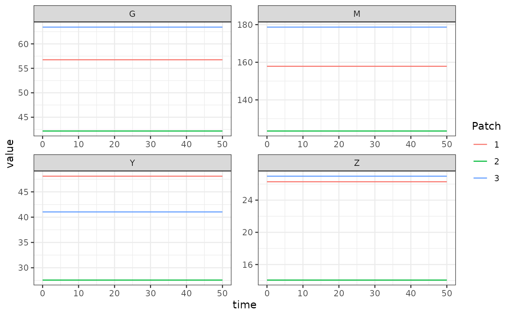

source("../R/adult-GeRM.R")The generalized Ross-Macdonald adult mosquito model fulfills the generic interface of the adult mosquito component. It was first published in this form in Spatial Dynamics of Malaria Transmission. It includes state variables for total mosquito density \(M\), gravid mosquito density \(G\), infected mosquito density \(Y\), and infectious mosquito density \(Z\).
Differential Equations
Delay Differential Equations
These equations are implemented by
exDE::dMYZdt.GeRM_dde.
\[ \dot{M} = \Lambda - \Omega\cdot M \] \[ \dot{G} = \mbox{diag}(f) \cdot (M-G) - \nu G - \Omega \cdot G \]
\[ \dot{Y} = \mbox{diag}(fq\kappa) \cdot (M-Y) - \Omega \cdot Y \]
\[ \dot{Z} = e^{-\Omega \tau} \cdot \mbox{diag}(fq\kappa_{t-\tau}) \cdot (M_{t-\tau}-Y_{t-\tau}) - \Omega \cdot Z \]
Recall that the mosquito demography matrix describing mortality and dispersal is given by:
\[ \Omega = \mbox{diag(g)} + \left(I- {\cal K}\right) \cdot \mbox{diag}(\sigma) \]
Ordinary Differential Equations
These equations are implemented by
exDE::dMYZdt.GeRM_ode.
The system of ODEs is the same as above except for the equation giving the rate of change in infectious mosquito density, which becomes:
\[ \dot{Z} = e^{-\Omega \tau} \cdot \mbox{diag}(fq\kappa) \cdot (M-Y) - \Omega \cdot Z \] The resulting set of equations is similar in spirit to the simple model presented in Smith & McKenzie (2004) in that mortality and dispersal over the EIP is accounted for, but the time lag is not. While transient dynamics of the ODE model will not equal the DDE model, they have the same equilibrium values, and so for numerical work requiring finding equilibrium points, the faster ODE model can be safely substituted.
Equilibrium solutions
There are two logical ways to begin solving the non-trivial equilibrium. The first assumes \(\Lambda\) is known, which implies good knowledge of mosquito ecology. The second assumes \(Z\) is known, which implies knowledge of the biting rate on the human population. We show both below.
Starting with \(\Lambda\)
Given \(\Lambda\) we can solve:
\[ M = \Omega^{-1} \cdot \Lambda \] Then given \(M\) we set \(\dot{Y}\) to zero and factor out \(Y\) to get:
\[ Y = (\mbox{diag}(fq\kappa) + \Omega)^{-1} \cdot \mbox{diag}(fq\kappa) \cdot M \] We set \(\dot{Z}\) to zero to get:
\[ Z = \Omega^{-1} \cdot e^{-\Omega \tau} \cdot \mbox{diag}(fq\kappa) \cdot (M-Y) \]
Because the dynamics of \(G\) are independent of the infection dynamics, we can solve it given \(M\) as:
\[ G = (\mbox{diag}(\nu) + \Omega + \mbox{diag}(f))^{-1} \cdot \mbox{diag}(f) \cdot M \]
Starting with \(Z\)
It is more common that we start from an estimate of \(Z\), perhaps derived from an estimated EIR (entomological inoculation rate). Given \(Z\), we can calculate the other state variables and \(\Lambda\). For numerical implementation, note that \((e^{-\Omega\tau})^{-1} = e^{\Omega\tau}\).
\[ M-Y = \mbox{diag}(1/fq\kappa) \cdot (e^{-\Omega\tau})^{-1} \cdot \Omega \cdot Z \]
\[ Y = \Omega^{-1} \cdot \mbox{diag}(fq\kappa) \cdot (M-Y) \]
\[ M = (M - Y) + Y \]
\[ \Lambda = \Omega \cdot M \] We can use the same equation for \(G\) as above.
Example
Here we show an example of starting and solving a model at equilibrium. Please note that this only runs this adult mosquito model and that most users should read our fully worked example to run a full simulation.
Here we set up some parameters for a simulation with 3 patches.
nPatches <- 3
f <- 0.3
q <- 0.9
g <- 1/20
sigma <- 1/10
tau <- 11
nu <- 1/2
eggsPerBatch <- 30
calK <- matrix(0, nPatches, nPatches)
calK[1, 2:3] <- c(0.2, 0.8)
calK[2, c(1,3)] <- c(0.5, 0.5)
calK[3, 1:2] <- c(0.7, 0.3)
calK <- t(calK)
Omega <- make_Omega(g, sigma, calK, nPatches)
Upsilon <- expm::expm(-Omega * tau)
kappa <- c(0.1, 0.075, 0.025)
Lambda <- c(5, 10, 8)
params <- list(
nPatches = nPatches
)
params <- list2env(params)Now we solve for the equilibrium values.
Omega_inv <- solve(Omega)
M_eq <- as.vector(Omega_inv %*% Lambda)
G_eq <- as.vector(solve(diag(nu+f, nPatches) + Omega) %*% diag(f, nPatches) %*% M_eq)
Y_eq <- as.vector(solve(diag(f*q*kappa) + Omega) %*% diag(f*q*kappa) %*% M_eq)
Z_eq <- as.vector(Omega_inv %*% Upsilon %*% diag(f*q*kappa) %*% (M_eq - Y_eq))Now we set up the parameter environment with the correct class using
exDE::make_parameters_MYZ_GeRM_ode, and set the indices
with exDE::make_indices. Then we can set up the initial
conditions vector and use deSolve::ode to solve the model.
Please note that we need to use exDE::MosquitoBehavior to
set up the bionomic parameters at equilibrium which are passed to
exDE::dMYZdt; this is necessary when running the adult
mosquito component alone without the full model. Normally these values
would be computed within exDE::xDE_diffeqn.
make_parameters_MYZ_GeRM_ode(pars = params, g = g, sigma = sigma, calK = calK, f = f, q = q, nu = nu, eggsPerBatch = eggsPerBatch, tau = tau, M0 = rep(0, nPatches), G0 = rep(0, nPatches), Y0 = rep(0, nPatches), Z0 = rep(0, nPatches))
make_indices(params)
y0 <- rep(NaN, params$max_ix)
y0[params$M_ix] <- M_eq
y0[params$G_ix] <- G_eq
y0[params$Y_ix] <- Y_eq
y0[params$Z_ix] <- Z_eq
y0[params$Upsilon_ix] <- as.vector(Upsilon)
MosyBehavior <- MosquitoBehavior(0, y, params)
out <- deSolve::ode(y = y0, times = 0:50, func = function(t, y, pars, Lambda, kappa, MosyBehavior) {
list(dMYZdt(t, y, pars, Lambda, kappa, MosyBehavior))
}, parms = params, method = 'lsoda', Lambda = Lambda, kappa = kappa, MosyBehavior = MosyBehavior)
colnames(out)[params$M_ix+1] <- paste0('M_', 1:params$nPatches)
colnames(out)[params$G_ix+1] <- paste0('G_', 1:params$nPatches)
colnames(out)[params$Y_ix+1] <- paste0('Y_', 1:params$nPatches)
colnames(out)[params$Z_ix+1] <- paste0('Z_', 1:params$nPatches)
out <- out[, -c(params$Upsilon_ix+1)]
out <- as.data.table(out)
out <- melt(out, id.vars = 'time')
out[, c("Component", "Patch") := tstrsplit(variable, '_', fixed = TRUE)]
out[, variable := NULL]
ggplot(data = out, mapping = aes(x = time, y = value, color = Patch)) +
geom_line() +
facet_wrap(. ~ Component, scales = 'free') +
theme_bw()